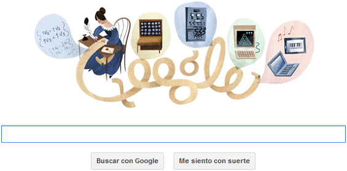

Ada Lovelace
Computer Programmer, Mathematician (1815–1852)

Google honors Ada Lovelace
- Name
Ada LoveLace - Nickname
Enchantress of Numbers - Born
December, 10th - London, England
- Ada met Babbage, who was her mentor and together they studied advanced mathematics
- Her work in computer science was discovered till 1950s and republished as "Faster than thought: A Symposium on Digital Computing Machines"
- U.S Defense Department named a new computer language after Ada